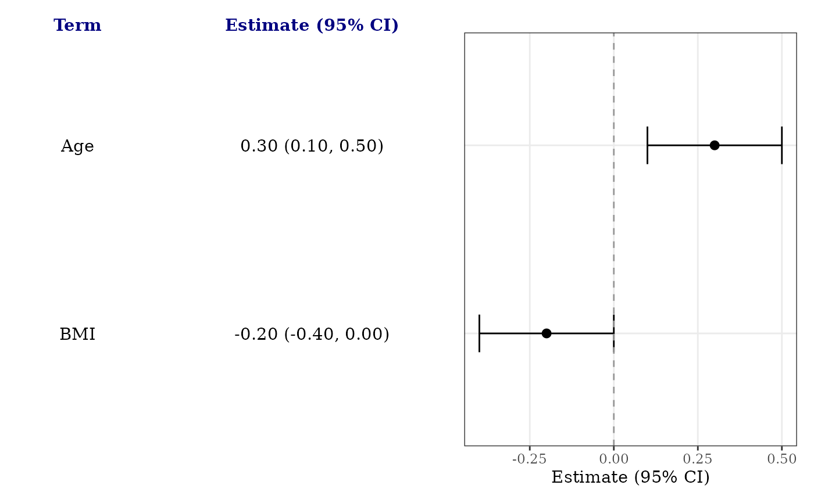

Apply a consistent plot theme and table typography before composing tables.
Explicit arguments to add_forest_table() or add_split_table() override
theme settings. Reference and row-header properties inherit body properties
when unspecified. Column headers inherit the body family and colour.
Usage
forest_theme(
base_size = 11,
base_family = "",
text_size = base_size/(72.27/25.4),
text_fontface = "plain",
text_family = base_family,
text_colour = "black",
header_text_size = base_size,
header_fontface = "bold",
header_family = NULL,
header_colour = NULL,
reference_text_size = NULL,
reference_fontface = NULL,
reference_family = NULL,
reference_colour = NULL,
row_header_text_size = NULL,
row_header_fontface = NULL,
row_header_family = NULL,
row_header_colour = NULL,
...
)Arguments
- base_size
Base plot text size in points.
- base_family
Base font family for the plot and tables.
- text_size
Body text size in millimeters. Defaults to
base_sizeconverted to millimeters.- text_fontface
Body font face:
"plain","bold","italic", or"bold.italic"(numeric codes 1 through 4 are also accepted).- text_family
Body font family. Defaults to
base_family.- text_colour
Body text colour.
- header_text_size
Column-header size in points.
- header_fontface
Column-header font face.
- header_family
Column-header font family.
- header_colour
Column-header text colour.
- reference_text_size, reference_fontface, reference_family, reference_colour
Overrides for every table cell in reference rows. Size is in millimeters.
- row_header_text_size, row_header_fontface, row_header_family, row_header_colour
Overrides for section and generated subgroup header rows (not column headers). Size is in millimeters.
- ...
Additional named settings passed to
ggplot2::theme().
Value
A forest-theme add-on for ggforestplot() + forest_theme().
Apply it before table helpers and add_favors(). This is not a standalone
ggplot2 theme and cannot be used with theme_set().
Examples
coefs <- data.frame(
term = c("Age", "BMI"), estimate = c(0.3, -0.2),
conf.low = c(0.1, -0.4), conf.high = c(0.5, 0)
)
ggforestplot(coefs) +
forest_theme(base_family = "serif", reference_fontface = "italic") +
add_forest_table(header_colour = "navy")
